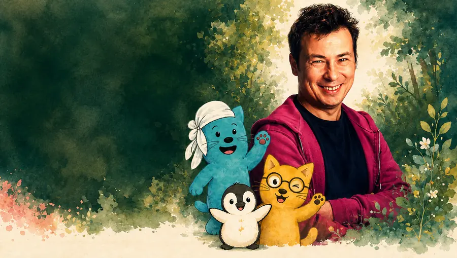
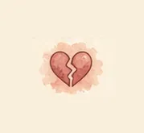
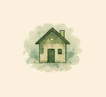
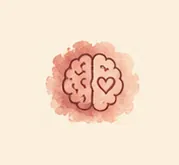

Vater sein darf auch widersprüchlich sein.
Raum für Druck, Wut, Überforderung, Rückzug, Nähe und Verantwortung – ohne Urteil.
Ich begleite Väter, die ihre Rolle bewusster leben wollen, die in Konflikten festhängen oder merken, dass alte Muster, Überlastung oder Sprachlosigkeit die Familie belasten.
Klar hinschauen. Nicht beschämen.
Neue Wege entwickeln.

Vater sein darf auch widersprüchlich sein.
Raum für Druck, Wut, Überforderung, Rückzug, Nähe und Verantwortung – ohne Urteil.
Ich begleite Väter, die ihre Rolle bewusster leben wollen, die in Konflikten festhängen oder merken, dass alte Muster, Überlastung oder Sprachlosigkeit die Familie belasten.
Klar hinschauen. Nicht beschämen.
Neue Wege entwickeln.


Womit Väter oft kommen


Was ich mit dir anschaue
Mein Ansatz für Väter
Ich arbeite nicht mit Scham, sondern mit Verstehen, Klarheit und konkreten Alltagsschritten.
Beziehung braucht Wiederverbindung.
Väter brauchen einen Raum, in dem auch Ambivalenz Platz hat.

Warum das hilft
Für wen das passt





Du musst nicht erst explodieren, damit Hilfe sinnvoll ist.
Kontakt aufnehmen
Schreib mir – ich melde mich zeitnah zurück.

Danke für deine Nachricht!
Ich melde mich so bald wie möglich.
(Demo – es wurde noch nichts versendet.)